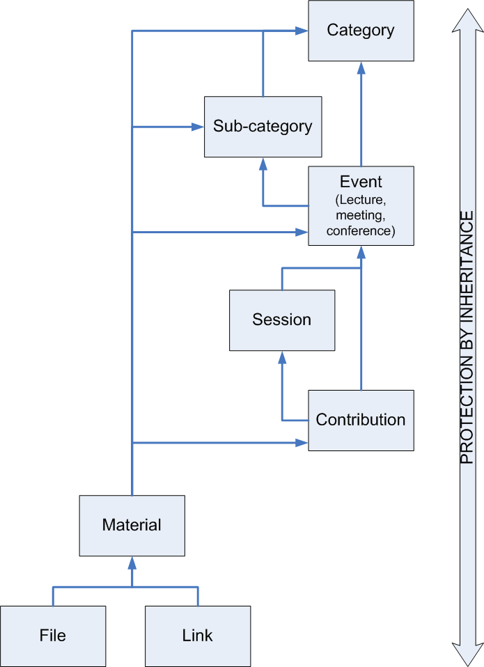
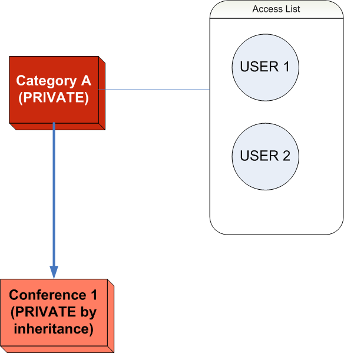

Chapter 9. Protection System¶
9.1. Introduction¶
This section aims to describe the protection system used by Indico to grant or restrict access to users.
9.2. Basic Concepts¶
9.2.1. Inheritance Schema¶
You can set up a protection policy for almost all the objects that you can create within Indico. This protection policy is based on an inheritance system, meaning that an object is going to inherit the protection from its father, e.g., a contribution can be public but becomes private if we set up its container (a meeting) as private.
The protection objects tree is as shown in the following picture:

As we can see, a File inherits the protection policy from Material, Material from Contribution, Contribution from Session, Session from Event, Event from Sub-category and Sub-category from Category. The next picture shows an example of this inheritance system. “Category A” is PRIVATE and because of this, “Conference 1” becomes PRIVATE too. As User 1 and User 2 are in the access list for “Category A” they can also access “Conference 1”. The rest of Indico users cannot access “Category A” and “Conference 1”.

9.2.2. Protection Types¶
For each object (category, conference, contribution, session, etc) in Indico, one can set up three kinds of protection: modification control list, access control setup, and domain control.
- The modification control list contains all the users or groups that can edit and modify an object. Therefore, people in this list will be the managers for the object and they can access all the pages related to it and the objects under it.
- Access control setup: by default, an object is public but we can make it private and add restrictions as shown in the section Access Control Policy.
- Domain control: one can protect an Indico object to be accessed only by users who are connected from some given IPs (see Domain Control Policy).
9.3. Access Control Policy¶
By default, all the objects (category, event, session, contribution, material, file and link) in Indico are PUBLIC.
We can set an object as PRIVATE and this means that all the objects under it will be PRIVATE as well.
If an object is PRIVATE, nobody can access it but the managers, the users/groups in the access list named “Users allowed to access” and those who know the “access key” if set.
If an object is PRIVATE by inheritance:
Nobody can access it but the managers and the users/groups in the access list “Users allowed to access” of its father (as example, see section “Inheritance Schema”).
We can set the PRIVATE object as PRIVATE by itself, which means that Indico checks only its protection policy and not the father’s protection policy.

In the graphic, “User 1” and “User 2” can access “Category A” but they cannot access “Conference 1”. Only “User 3” can access “Conference 1”.
We can set the PRIVATE object as ABSOLUTELY PUBLIC, which means that Indico skips the protection that was established by inheritance.

In the graphic, only “User 1” and “User 2” can access “Category A”, but everybody can access “Conference 1”.
9.4. Domain Control Policy¶
If an Indico object (category, event, session, contribution, material, file and link) is PUBLIC, we can restrict the access to users accessing Indico from some given IPs (these IPs could be like 127.1 which means that every IP starting like this will be valid).
If the Indico object is PRIVATE, this checking will not be applied.
If you wish to add special access to some users, meaning that the domain control will not be applied for those users, you can add them in the “Users allowed to access” list.